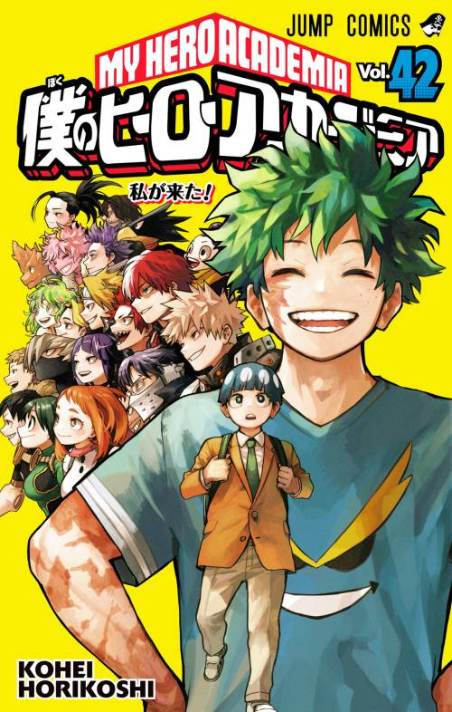

Colección completa · 42 tomos
Una biblioteca para leer sin perder el hilo.
My Hero Academia ya está organizado del tomo 1 al 42 y conectado con el lector de páginas animadas.
My Hero Academia ya está organizado del tomo 1 al 42 y conectado con el lector de páginas animadas.

Consulta su ficha, administra sus tomos y deja lista la siguiente lectura desde el mismo panel.
Una nueva sección para organizar la novela y sus futuras lecturas con la misma experiencia polar.